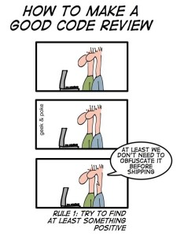

Aufgaben¶
Hier finden Sie die Aufgaben. Die Abgabefristen der einzelnen Aufgaben stehen hier. Beachten Sie die nachfolgenden Hinweise zum Hochladen der Aufgaben.
Hinweise zur Abgabe der Aufgaben¶
Die Aufgaben laden Sie in Moodle unter dem Reiter "Aufgaben" hoch. Dort ist für jede Aufgabe eine Moodle-Aufgabe erstellt. Beachten Sie, dass ein Hochladen nach Ablauf der Abgabefrist nicht mehr möglich ist.
BlueJ vs. Eclipse¶
Die ersten Wochen verwenden wir als Entwicklungsumgebung BlueJ. Für die Aufgaben, die wir mit BlueJ lösen, werde ich Ihnen jeweils Hinweise zur Abgabe für jede Aufgabe einzeln geben.
Sobald wir Eclipse verwenden, gelten die folgenden Hinweise:
- Achten Sie darauf, dass Sie die Quelldateien (also die
.java-Dateien aus demsrc-Verzeichnis) hochladen. - Ihre Klassen erstellen Sie immer in einem package
aufgaben.aufgabeX. Das heißt, Aufgabe1 ist im packageaufgaben.aufgabe1, Aufgabe2 im packageaufgaben.aufgabe2usw. - In Ihrem
workspacegibt es dann einen Ordner für Ihr Java-Projekt, z.B.WS21(je nachdem, wie Sie Ihr Java-Projekt genannt haben) und darin befindet sich einbin- und einsrc-Ordner. In demsrc-Ordner befindet sich dann ein Ordneraufgabenund darin ein Ordneraufgaben1(für Aufgabe1). Darin befindet sich Ihre.java-Datei, die Sie hochladen sollen. Angenommen, Sie haben Ihre KlasseAufgabe1genannt, dann heißt die Klasse alsoAufgabe1.java. Sie folgen also dem Pfadworkspace→ Java-Projekt (z.B.WS21) →src→aufgaben→aufgabeX. - Wenn Ihre Lösung aus mehreren Klassen (mehreren
.java-Dateien) besteht, können Sie entweder die Dateien einzeln hochladen oder Sie zippen Ihre Dateien (am besten dann denaufgabeX-Ordner und laden das.zip-File hoch. - In Ihrer Lösung (Ihrer/n Klasse/n) fügen Sie direkt oberhalb Ihrer Klassendefinition einen JavaDoc-Kommentar ein (
/** ... */). Dieser enthält ein@author-Tag. dahinter schreiben Sie Ihren Namen. Das sieht dann z.B. so aus:package aufgaben.aufgabe1; /** * * @author Jörn Freiheit * * Diese Klasse gibt auf die Konsole ein Rhombus (eine Raute) aus. * Der Rhombus ist entweder gefuellt oder ungefuellt. * */ public class Aufgabe1 { // hier Ihre Implementierung } - Sie können Ihre Aufgaben zu zweit lösen. Tragen Sie dann hinter das
@author-Tag beide Namen ein und laden Sie bitte beide die Lösung in Moodle hoch!
Code Review¶
Für jede abgegebene Aufgabe wird Ihnen die Lösung einer Kommilitonin zum Review zugewiesen. Analysieren Sie den Code Ihrer Kommilitonin und geben Sie ihr dazu eine Rückmeldung! Es genügen 2 bis 3 Review-Kommentare. Zur offiziellen Abgabe einer Aufgabe gehören also
- das Hochladen der eigenen Lösung,
- das Analysieren/Kommentieren einer fremden Lösung.
Hinweise zum Review:¶
- Es geht nicht darum, das Programm zu überarbeiten, sondern darum es nachzuvollziehen und Ihrer Kommilitonin eine Rückmeldung und eventuell Anregungen zu geben.
- Weisen Sie sowohl auf Stärken als auch auf Schwächen des Quelltexts hin.
- Worauf Sie u.a. achten können:
- Ist der Quelltext gut strukturiert und verständlich?
- Haben Variablen und Methoden passende Namen? Werden die Namen konsistent verwendet?
- Werden Konventionen eingehalten? Beispiel: Klassennamen starten immer mit Großbuchstaben, Objektnamen immer mit Kleinbuchstaben
- Ist das Programm übersichtlich formatiert? Beispiel: kein horizontales Scrolling nötig
- Machen Sie ggf. Vorschläge für (alternative) Lösungen.
- Gehen Sie respektvoll miteinander um, es gibt keinen Grund, unhöflich zu sein.
- Lesen Sie Ihre Kommentare noch einmal durch, bevor Sie sie an Ihre Kommilitonin weitergeben.

Aufgaben¶
Aufgabe 1 (Abgabe bis 25.10.2021 24:00 Uhr)¶
Aufgabe1 - Square mit Circles
- Verwenden Sie BlueJ und öffnen Sie das Projekt
pictureaus demexamples-Ordner von BlueJ. Speichern Sie das Projekt als Projektaufgabe1ab. Die KlassePicturekönnen Sie wie folgt anpassen:/** * Aufgabe 1 * */ public class Picture { /** * Constructor for objects of class Picture */ public Picture() {// nothing to do... instance variables are automatically set to null } /** * Draw this picture. */ public void draw() { Square s1 = new Square(); Circle c1 = new Circle(); Circle c2 = new Circle(); Circle c3 = new Circle(); Circle c4 = new Circle(); // hier die Implementierung } } -
Programmieren Sie die
draw()-Methode so, dass folgendes Bild gezeichnet wird:
Die Größen bleiben Ihnen überlassen, aber die vier Kreise sollen das gelbe Quadrat vollständig ausfüllen. Den Titel des Fensters müssen Sie nicht ändern (geht aber in der Klasse
Canvas). -
Erstellen Sie sich eine Testklasse
PictureTest, in der es eine TestmethodetestDraw()gibt, die diedraw()-Methode für einPicture-Objekt ausführt. - Zippen Sie Ihr Projekt
aufgabe1und laden es in Moodle hoch.
Aufgabe 2 (Abgabe bis 01.11.2021 24:00 Uhr)¶
Aufgabe2 - Methoden und Ausgaben
- Erstellen Sie sich ein neues Projekt
aufgabe2und darin eine neue KlasseAufgabe2, die wie folgt aussieht:public class Aufgabe2 { public Aufgabe2() { } public void start() { // rufen Sie hier Ihre Methoden auf: } } - Implementieren Sie eine Methode
computeSum(double number1, double number2), die die Summe der beiden Zahlennumber1undnumber2alsdoublezurückgibt. - Implementieren Sie eine Methode
printSum(double number1, double number2, die die Summe der beiden Zahlennumber1undnumber2in der folgenden Form ausgibt. Die Ausgabe sieht für die Beispielwertenumber1 = 4.0undnumber2 = 5.0so aus:Rufen Sie in der4.0 + 5.0 = 9.0printSum(double number1, double number2-Methode die MethodecomputeSum(double number1, double number2)auf! - Implementieren Sie ähnliche Methoden auch für die Subtraktion, Multiplikation und Division von zwei
double-Zahlen. Verwenden Sie jeweils diecomputeXXX()-Methoden in denprintXXX()-Methoden. - Erstellen Sie eine Methode
printComputations(double number1, double number2), in der alle vierprintXXX()-Methoden aufgerufen werden, so dass durch den Aufruf derprintComputations(double number1, double number2)-Methode folgende Ausgabe erscheint (Beispielwerte4.0und5.0):4.0 + 5.0 = 9.0 4.0 - 5.0 = -1.0 4.0 * 5.0 = 20.0 4.0 / 5.0 = 0.8 - Zippen Sie Ihr Projekt
aufgabe2und laden es in Moodle hoch.
Aufgabe 3 (Abgabe bis 08.11.2021 24:00 Uhr)¶
Aufgabe3 - Rechteck
- Erstellen Sie sich ein neues Projekt
aufgabe3und darin eine neue KlasseAufgabe3, die wie folgt aussieht:public class Aufgabe3 { public Aufgabe3() { } public void start() { // rufen Sie hier Ihre Methoden auf: } } - Implementieren Sie eine Methode
public void printRectangle(int width, int height, boolean filled){} - Ist der Parameterwert von
filledtrue, dann soll ein Rechteck wie folgt auf die Konsole ausgegeben werden (Beispielausgabe fürwidth=11undheight=5):*********** *********** *********** *********** *********** - Ist der Parameterwert von
filledfalse, dann soll das Rechteck ungefüllt sein, also so:*********** * * * * * * *********** - Die obere Ausgabe ist also durch die Anweisung
printRectangle(11, 5, true);und die untere durch die AnweisungprintRectangle(11, 5, false);entstanden. - Tipp:: Schreiben Sie sich zwei weitere Methoden
public void printRectangleFilled(int width, int height){}undpublic void printRectangleUnfilled(int width, int height){}, die Sie entsprechend des Wertes vonfilledaufrufen. In der einen Methode erstellen Sie das ausgefüllte Rechteck und in der anderen das ungefüllte. Dann wird Ihr Programm nicht zu unübersichtlich. Fangen Sie am besten mit der ausgefüllten an, die ist etwas leichter. - Das Programm soll für beliebige (nicht so große - max. Werte für
widthundheightje100) positive Zahlen (also> 0) funktionieren. Insbesondere sind die Tests fürwidth=1undheight=1bzw.height=2interessant. - Zippen Sie Ihr Projekt
aufgabe3und laden es in Moodle hoch. Viel Spaß und viel Erfolg!
Aufgabe 4 (Abgabe bis 15.11.2021 24:00 Uhr)¶
Aufgabe4 - Rhombus
- Erstellen Sie sich ein neues Projekt
aufgabe4und darin eine neue KlasseAufgabe4, die wie folgt aussieht:public class Aufgabe4 { public Aufgabe4() { } public void start() { // rufen Sie hier Ihre Methoden auf: } } - Implementieren Sie eine Methode
public void printRhombus(int upperHalf, boolean filled){} - Ist der Parameterwert von
filledtrue, dann soll ein Rhombus (eine Raute) wie folgt auf die Konsole ausgegeben werden:* *** ***** ******* ********* *********** ********* ******* ***** *** * - Ist der Parameterwert von
filledfalse, dann soll der Rhombus ungefüllt sein, also so:* * * * * * * * * * * * * * * * * * * * - der Wert für
upperHalfgibt die Höhe einer Hälfte des Rhombus an. Die Gesamthöhe des Rhombus berechnet sich aus `int height = 2 * upperHalf +1; - In unserem oben gezeigten Beispiel ist der Wert von
upperHalf5und die Gesamthöhe des Rhombus11. - Die obere Ausgabe ist also durch die Anweisung
printRhombus(5, true);und die untere durch die AnweisungprintRhombus(5, false);entstanden. - Die Berechnung der Höhe aus dem Parameterwert
upperHalfhat die Vorteile,- dass die Höhe dadurch immer eine ungerade Zahl ist (was notwendig ist) und
- dass Sie den Wert
upperHalfgut verwenden können (was ebenfalls notwendig ist, wie Sie merken werden)
- Tipp:: Schreiben Sie sich zwei weitere Methoden
public void printRhombusFilled(int upperHalf){}undpublic void printRhombusUnfilled(int upperHalf){}, die Sie entsprechend des Wertes vonfilledaufrufen. In der einen Methode erstellen Sie die ausgefüllte Raute und in der anderen die ungefüllte. Dann wird Ihr Programm nicht zu unübersichtlich. Fangen Sie am besten mit der ausgefüllten an, die ist etwas leichter. - Das Programm soll für beliebige (nicht so große - max. Wert
100) positive Zahlen (also> 0) vonupperHalffunktionieren. Insbesondere sind die Tests fürupperhalf == 1interssant. - Zippen Sie Ihr Projekt
aufgabe4und laden es in Moodle hoch. Viel Spaß und viel Erfolg!
Aufgabe 5 (Abgabe bis 22.11.2021 24:00 Uhr)¶
Aufgabe5 - Knobeleien
- Diese Aufgabe ist hauptsächlich dazu da, um das algorithmische Denken zu schulen. Sie werden im Netz jeweils viele Lösungen finden, aber Sie sollten versuchen, alleine auf eine Lösung zu kommen. Versuchen Sie es! Ich gebe zu jeder Aufgabe kleine Tipps.
- Erstellen Sie sich ein neues Projekt
aufgabe5und darin eine neue KlasseAufgabe5, die wie folgt aussieht:public class Aufgabe5 { public Aufgabe5() { } public void start() { // rufen Sie hier Ihre Methoden auf: } } - Implementieren Sie eine Methode
public int computeChecksum(int number){}. Diese Methode berechnet die Quersumme der Zahlnumberund gibt diese zurück. Hier ein paar Beispiele:Tipp: "Laufen" Sie am besten von hinten nach vorne durch die Zahlnumber: 123456 -> checksum: 21 number: -123456 -> checksum: -21 number: 0 -> checksum: 0 number: 2147483647 -> checksum: 46 number: -2147483648 -> checksum: -47numberund lösen immer die letzte Ziffer von der Zahl, um diese dann zur Quersumme zu addieren. Welchen Operator kennen Sie, um als Ergebnis die letzte Ziffer einer Dezimalzahl zu erhalten? Wie lange müssen Sie "laufen"? -
Implementieren Sie eine Methode
public void printCombinations36(){}. Diese Methode gibt alle Kombinationen für 3 ganze Zahlenx,yundzauf der Konsole aus, für die Folgendes gilt:Tipp: Überlegen Sie sich zuerst, wie man z.B. alle Kombinationen ermitteln kann, wennx <= y <= z und x * y * z = 36x,yundzjeweils Werte zwischen-50und50annehmen können (das sind dann100^3, also1000000Kombinationen). Überlegen Sie dann, wie Sie diese Wertebereiche mithilfe der beiden Bedingungen einschränken können. Es gibt übrigens 28 Kombinationen, für die die beiden obigen Bedingungen gelten.
Wenn Sie diese beiden Aufgaben erledigt haben, dann haben Sie genug geknobelt. Herzlichen Glückwunsch - Aufgabe erfüllt! Nur für diejenigen unter Ihnen, die vom Knobeln nicht genug bekommen können, gibt es die folgende Zusatzaufgabe. Ist aber wirklich keine Pflicht, sondern soll nur Vergnügen sein :-)
-
Zusatzaufgabe: Implementieren Sie eine Methode
public void printPrimeFactors(int number){}, die für die übergebene Zahlnumberdie Primzahlfaktorzerlegung auf die Konsole ausgibt, also z.B. so:Tipp:: Nützliche Methoden sind sicherlich480 --> 2 2 2 2 2 3 5 17 --> 17 12345 --> 3 5 823boolean isPrime(int number)undboolean isDivider(int factor, int number), wobei Letztere prüft, obfactorein ganzzahliger Teiler vonnumberist. Achten Sie darauf, dass wenn Sie einen Primfaktor gefunden haben, es auch derselbe Primfaktor wiederholt sein kann. Ist knifflig!
Aufgabe 6 (Abgabe bis 29.11.2021 24:00 Uhr)¶
Aufgabe6 - Triangle
-
Wir erstellen uns einen neuen Datentyp
Triangle -
Erstellen Sie sich ein neues Projekt
aufgabe6und darin eine neue KlasseTrianglesowie dafür eine TestklasseTestTrianglemit einertestTriangle()-Methode. -
In der Klasse
Triangleerstellen Sie drei Objektvariablena,bundcjeweils vom Typintund alleprivate. Das sollen die Seiten unseres Dreiecks sein. -
Erstellen Sie einen Konstruktor, dem drei Parameterwerte übergeben werden
pa,pbundpcalle vom Typint. Mit diesen Werten werden die Objektvariablen initialisiert. -
Schreiben Sie eine Objektmethode
print(), die die Seitenlängen des Dreiecks in der folgenden Form ausgibt:für den Fall, dass die SeitenlängenSeiten : a=3, b=4, c=53,4und5sind. -
Wenn Sie jetzt in der
testTriangle()-Methode der TestklasseTestTrianglefolgende Anweisungen ausführendann sollte die Ausgabe ungefähr so aussehen:Triangle t1 = new Triangle(3, 4, 5); Triangle t2 = new Triangle(4, 4, 7); Triangle t3 = new Triangle(5, 5, 5); Triangle t4 = new Triangle(4, 5, 3); Triangle t5 = new Triangle(4, 3, 5); Triangle t6 = new Triangle(3, 4, 5); t1.print(); t2.print(); t3.print(); t4.print(); t5.print(); t6.print();Seiten : a=3, b=4, c=5 Seiten : a=4, b=4, c=7 Seiten : a=5, b=5, c=5 Seiten : a=4, b=5, c=3 Seiten : a=4, b=3, c=5 Seiten : a=3, b=4, c=5 -
Erstellen Sie in der Klasse
Triangleeine Objektmethodepublic int circumference(), die den Umfang des Dreiecks zurückgibt (also die Summe der drei Seitenlängen). -
Erstellen Sie in der Klasse
Triangleeine Objektmethodepublic double area(), die den Flaecheninhalt des Dreiecks zurückgibt. Der FlächeninhaltAeines Dreiecks lässt sich nach der Heron'schen Formel wie folgt berechnen:A= Math.sqrt(s * (s-a) * (s-b) * (s-c))- wobei
s = (a + b + c) / 2 - Achten Sie darauf, dass Sie stets mit
doublerechnen! - Beachten Sie, dass in einem Dreieck keine Seite länger sein darf als die Summe der beiden anderen. Für die oben in der
testTriangle()-Methode erstellten Objekte gilt das aber. Wir müssen deshalb nichts weiter beachten.
-
Erweitern Sie die Objektmethode
print()nun so, dass auch der Umfang und der Flaecheninhalt in der folgenden Form ausgegeben werden (Sie können in dieprint()-methode auch die Leerzeile integrieren):Seiten : a=3, b=4, c=5 Umfang : 12 Flaecheninhalt : 6.0 Seiten : a=4, b=4, c=7 Umfang : 15 Flaecheninhalt : 6.777720855862979 Seiten : a=5, b=5, c=5 Umfang : 15 Flaecheninhalt : 10.825317547305483 Seiten : a=4, b=5, c=3 Umfang : 12 Flaecheninhalt : 6.0 Seiten : a=4, b=3, c=5 Umfang : 12 Flaecheninhalt : 6.0 Seiten : a=3, b=4, c=5 Umfang : 12 Flaecheninhalt : 6.0 -
Erstellen Sie in der Klasse
Triangleeine Objektmethodepublic boolean equilateral(), die eintruezurückgibt, wenn das Dreieck gleichseitig ist (also alle Seiten des Dreiecks gleich lang sind) undfalsesonst. -
Erstellen Sie in der Klasse
Triangleeine Objektmethodepublic boolean isosceles(), die eintruezurückgibt, wenn das Dreieck gleichschenklig ist (also zwei Seiten des Dreiecks gleich lang sind) undfalsesonst. -
Erweitern Sie die Objektmethode
print()nun so, dass die Prüfungen, ob sich um ein gleichseitiges oder gleichschenkliges (oder unregelmäßiges) Dreieck handelt, in der folgenden Form ausgegeben werden:Seiten : a=3, b=4, c=5 Umfang : 12 Flaecheninhalt : 6.0 Das Dreieck ist unregelmaessig. Seiten : a=4, b=4, c=7 Umfang : 15 Flaecheninhalt : 6.777720855862979 Das Dreieck ist gleichschenklig. Seiten : a=5, b=5, c=5 Umfang : 15 Flaecheninhalt : 10.825317547305483 Das Dreieck ist gleichseitig. Seiten : a=4, b=5, c=3 Umfang : 12 Flaecheninhalt : 6.0 Das Dreieck ist unregelmaessig. Seiten : a=4, b=3, c=5 Umfang : 12 Flaecheninhalt : 6.0 Das Dreieck ist unregelmaessig. Seiten : a=3, b=4, c=5 Umfang : 12 Flaecheninhalt : 6.0 Das Dreieck ist unregelmaessig.
Wenn Sie das geschafft haben, dann haben Sie die Aufgabe erfüllt! Herzlichen Glückwunsch! Die folgenden Aufgaben sind optional (kann auch sein, dass wir die Objektvergleiche noch gar nicht haben, dann wird es erst recht knifflig :-) ):
-
Erstellen Sie in der Klasse
Triangleeine Objektmethodepublic boolean sameCircumference(Triangle t), die eintruezurückgibt, wenn das aufrufende Objekt den gleichen Umfang hat wietundfalsesonst. -
Erstellen Sie in der Klasse
Triangleeine Objektmethodepublic boolean isSmaller(Triangle t), die eintruezurückgibt, wenn das aufrufende Objekt einen kleineren Flächeninhalt hat, alstundfalsesonst. -
Erstellen Sie in der Klasse
Triangleeine Objektmethodepublic boolean isBigger(Triangle t), die eintruezurückgibt, wenn das aufrufende Objekt einen größeren Flächeninhalt hat, alstundfalsesonst. -
Testen Sie in der
testTriangle()-Methode der TestklasseTestTriangledie drei zuletztgeschriebenen Methoden, so dass folgende Ausgaben erzeugt werden:t1 und t2 gleicher Umfang ? : false t1 und t3 gleicher Umfang ? : false t2 und t3 gleicher Umfang ? : true t1 kleiner als t2 ? : true t2 kleiner als t1 ? : false t1 kleiner als t4 ? : false t4 kleiner als t1 ? : false t1 groesser als t2 ? : false t2 groesser als t1 ? : true t1 groesser als t4 ? : false t4 groesser als t1 ? : false -
Erstellen Sie in der Klasse
Triangleeine Objektmethodepublic boolean sidesAreEqual(Triangle t), die eintruezurückgibt, wenn das aufrufende Objekt die gleichen Seitenlängen hat wietundfalsesonst.- Beachten Sie, dass folgende Dreiecke mit z.B. dem Dreieck (
a=3, b=4, c=5) gleich sein sollen: (a=3, b=4, c=5), aber auch (a=4, b=5, c=3), aber auch (a=5, b=3, c=4) → die "Benennung" der Seiten ist also egal - Jedoch soll z.B. (
a=4, b=3, c=5) nicht gleich zu (a=3, b=4, c=5) sein - für die obigen Objekte soll somit gelten:
Erzeugen Sie diese Ausgabe in
t1 und t2 gleiche Seiten ? : false t1 und t4 gleiche Seiten ? : true t1 und t5 gleiche Seiten ? : false t1 und t6 gleiche Seiten ? : truetestTriangle().
- Beachten Sie, dass folgende Dreiecke mit z.B. dem Dreieck (
-
Erstellen Sie in der Klasse
Triangleeine Objektmethodepublic boolean isRightAngled(), die eintruezurückgibt, wenn das Dreieck rechtwinklig ist undfalsesonst.- der Satz des Pythagoras besagt, dass in einem rechtwinkligen Dreieck gilt:
a^2 + b^2 = c^2 - es gilt aber auch die Umkehrung, d.h. wenn von 2 Seiten die Summe der Quadrate dem Quadrat der dritten Seite entspricht, dann ist das Dreieck rechtwinklig
- der Satz des Pythagoras besagt, dass in einem rechtwinkligen Dreieck gilt:
-
Erweitern Sie die Objektmethode
print()nun so, dass die Prüfungen, ob sich um ein rechtwinkliges Dreieck handelt, in der folgenden Form ausgegeben werden:Seiten : a=3, b=4, c=5 Umfang : 12 Flaecheninhalt : 6.0 Das Dreieck ist unregelmaessig. Das Dreieck ist rechtwinklig. Seiten : a=4, b=4, c=7 Umfang : 15 Flaecheninhalt : 6.777720855862979 Das Dreieck ist gleichschenklig. Das Dreieck ist nicht rechtwinklig. Seiten : a=5, b=5, c=5 Umfang : 15 Flaecheninhalt : 10.825317547305483 Das Dreieck ist gleichseitig. Das Dreieck ist nicht rechtwinklig. Seiten : a=4, b=5, c=3 Umfang : 12 Flaecheninhalt : 6.0 Das Dreieck ist unregelmaessig. Das Dreieck ist rechtwinklig. Seiten : a=4, b=3, c=5 Umfang : 12 Flaecheninhalt : 6.0 Das Dreieck ist unregelmaessig. Das Dreieck ist rechtwinklig. Seiten : a=3, b=4, c=5 Umfang : 12 Flaecheninhalt : 6.0 Das Dreieck ist unregelmaessig. Das Dreieck ist rechtwinklig. -
Viel Spaß und viel Erfolg!